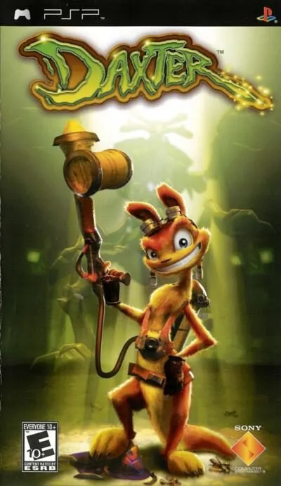

PSP
Daxter
- Año: 2006
- Desarrollador: Ready at Dawn
- Género: Acción
- Jugadores: 4 jugadores
Daxter se centra en el mundo del entrañable ottsel naranja que se hizo popular en la saga Jak and Daxter. La historia sigue a Daxter mientras busca a Jak, encarcelado en los sucesos que dieron comienzo a «Jak II». Ahora solo en un lugar desconocido, Daxter se da cuenta enseguida de que ser pequeño y peludo no le ayudará a sobrevivir. Para acabar con una misteriosa plaga de insectos metálicos, acepta un trabajo de exterminador de plagas, lo que le permite explorar partes de Haven City en busca de pistas que le lleven hasta Jak. Se juega desde su perspectiva, con un repertorio de movimientos ágiles que permiten trepar por paredes, acercarse sigilosamente a los enemigos, meterse en sitios pequeños y manejar vehículos. Como exterminador, Daxter va equipado con artilugios para librar a la ciudad de estos molestos bichos metálicos: aplasta un ejército de insectos con su endeble matamoscas o usa su pistola de spray para flotar por distintos escenarios mientras recoges mejoras.
Controles
que Daxter se mueva con el joystick. Según una guía: B (✕) salta, Y (□) golpea con el matamoscas eléctrico, A (○) echa el insecticida (en el aire: flotar), X (△) activa el modo Ottsel, L y R mueven la cámara; B y luego Y dos veces, ataque en picado; Y y luego B, gancho hacia arriba. ¿Va fluido?
Mando de PSP. El joystick mueve la cruceta y también la palanca analógica, porque muchos juegos de PSP solo se mueven con ella.
| Panel | Juego |
|---|---|
 | ✕ |
 | ○ |
 | R |
 | □ |
 | △ |
 | L |
 | Start |
 | Select |
+  | Salir del juego |
El panel en PSP


Argumento
Recopilado de internet (2026-11-04). Lo marcado con ⚠️ no está probado en la bartop.
Ocurre durante los dos años que pasan al principio de Jak II: la Guardia Krimzon captura a Jak, pero Daxter, su amigo ottsel, consigue escapar. Casi dos años después, sin haber logrado rescatarlo, Daxter casi se ha olvidado de él. Un anciano, Osmo, lo contrata como exterminador de los «bichos metálicos» (Metal Bugs) por Haven City y sus alrededores. Por el camino conoce a Taryn, que no le hace mucho caso pero a veces le ayuda.
Tras muchos encargos, Daxter ve a Jak en un vehículo de la prisión e intenta seguirlo. Ximon, el hijo de Osmo, le ayuda, entre otras cosas a robar del palacio del Barón Praxis un mapa de la Fortaleza donde está Jak. Mientras, Kaeden, un tipo amargado que parece querer quedarse la tienda de Osmo, trabaja en secreto para Kor, el jefe de los Metal Heads.
Final: Kaeden vuela la tienda; Daxter y Osmo sobreviven. Daxter entra en la Fortaleza, descubre que Kaeden es un bicho metálico gigante y lo vence. Luego sube a una plataforma para buscar a Jak, y así enlaza con el principio de Jak II. Al final se ve que Daxter le estaba contando todo esto a Jak y a sus amigos en su bar.
Fuentes
Jugabilidad
Recopilado de internet (2026-11-04). Lo marcado con ⚠️ no está probado en la bartop.
- Plataformas en 3D en un mundo casi abierto, sin apenas cargas, de Ready at Dawn (2006); de la serie Jak and Daxter. Los portales llevan a las misiones que hacen avanzar la historia (ver «Guía de niveles»).
- Movimiento: doble salto, agarrarse a los bordes, agacharse para pasar por huecos, camas elásticas, tirolinas y vehículos.
- Combate: el matamoscas eléctrico de eco azul, con combos contra varios enemigos.
- Insecticida: tras las primeras misiones, un depósito que rocía eco verde y aturde a los enemigos. Luego se mejora con una mochila propulsora (para volar), un lanzallamas y un cañón ultrasónico.
- Vida: se recupera con los paquetes de eco verde; el insecticida se recarga con los grupos de eco verde.
- Sueños de Daxter: minijuegos que parodian películas (Matrix, Braveheart, El señor de los anillos, Indiana Jones), según los capítulos del vídeo.
Botones según las guías (⚠️ por confirmar)
| Mando de PSP | Panel | Acción |
|---|---|---|
| Palanca |  | Mover a Daxter |
| ✕ | | Saltar |
| □ | | Golpear con el matamoscas |
| ○ | | Echar el insecticida |
| △ | | Activar el modo Ottsel |
| L / R | / | Mover la cámara |
| Cruceta izquierda / derecha | ⚠️ | Cambiar el modo del insecticida (⚠️ en la bartop el joystick también es la cruceta) |
| ✕, □ □ | , | Ataque en picado |
| □, ✕ | , | Gancho hacia arriba |
| ✕, ○ | , | Flotar en el aire con el insecticida |
Guía de niveles
Recopilado de internet (2026-11-04). Lo marcado con ⚠️ no está probado en la bartop.
| Tramo | Misiones (y lugares) |
|---|---|
| Primera parte | Westside Hotel · Construction Site · Breezy Valley · Brewery · Transit System · Strip Mine |
| Segunda parte | Tanker · City Port · Fish Cannery · Distillery · Emerald Isle |
| Tercera parte | Construction Site 2 · Strip Mine 2 · Lumber Mill · Haven City Streets · Tanker 2 · Baron's Palace |
| Final | Prison (la Fortaleza) · jefe final |
- Entre medias, los minijuegos de los sueños de Daxter. Algunos lugares se repiten con misiones nuevas.
- Nombres: los de los capítulos del vídeo.
Fuentes
Objetos
Recopilado de internet (2026-11-04). Lo marcado con ⚠️ no está probado en la bartop.
| Objeto | Qué hace |
|---|---|
| Eco verde (paquete) | Recupera vida |
| Eco verde (grupo) | Recarga el insecticida |
| Gema de bicho dorada | Coleccionable |
| Orbe precursor | Coleccionable; desbloquea extras |
| Marco de cuadro | Al romperlo, da objetos especiales |
Fuentes
Trucos y secretos
Recopilado de internet (2026-11-04). Lo marcado con ⚠️ no está probado en la bartop.
- Orbes precursores: desbloquean extras.
- Marcos escondidos: dan objetos únicos.
- En la PSP original se podía conectar una partida de Jak X para cambiar las gafas de Daxter (no se puede en la bartop).
- ⚠️ No he encontrado trucos de botones.
Fuentes
Longplay

Partida completa de la versión PSP al 100 % (349 min), de Kouteshi; ⚠️ parece grabada en PS5, que ejecuta el juego de PSP original: DAXTER Gameplay Walkthrough FULL GAME 100% (4K 60FPS) No Commentary.
Pulsa el minuto de un nivel para ver el vídeo desde ese punto.
Misiones
| Tramo | Misiones |
|---|---|
| Primera parte | |
| Segunda parte | |
| Tercera parte | |
| Final |